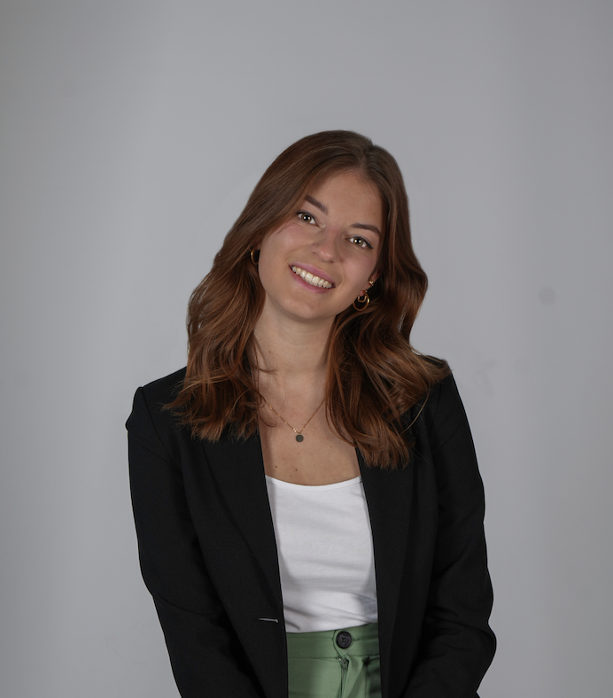

Helloooo welcome to my digital CV!
This is me:

| 2020 | four-week internship Szabo&Partner WT GmbH, 1221 Vienna |
| 2021 - 2023 | first smal design tasks for different companies (vitiligo.at, stageyourhome, HBD Steuerberatung etc.) in webdesign and logodesign |
| since 2023 | freelance work as a graphic designer and social media manager |
| 2025 - 2026 | Co-founder of the animation and filmstudio drehpunkt. |
| 2026 | four-months internship Social Media, Design & Video short & sweet GmbH, 8010 Graz |
2018-2023
Higher technical collage for product management and presentation
2340 Mödling
2023-2026
BA Information Design
FH JOANNEUM, 8020 Graz
since 2026
MA Content Strategy
FH JOANNEUM, 8020 Graz
To see some of my work, visit my Portfolio!
If you want to connect, write me an E-mail!
...or text me on Instagram!
Here is also my LinkedIn!
Back to the top!